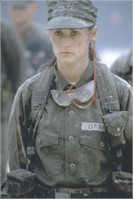
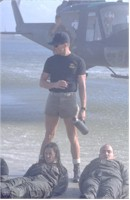

Contents | Features | Reviews | News | Archives | Store |
 |
|
| Movie Credits | Buy It! |
G.I. Jane
Review by Carrie
Gorringe
Posted 22 August 1997
| Directed by Ridley Scott Starring Demi Moore, Viggo Mortensen, Screenplay by David Twohy and Danielle Alexandra |
Well, it’s taken over ten years to come up with the feminine counterpart to Top Gun; no doubt desirous of keeping profitable ideas all in the family, Ridley Scott has decided to take brother Tony’s idea and go him one better. Lt. Jordan O’ Neil (Moore) is the unwitting pawn in a political game of quid pro quo. She is being dealt out like a hand of cards by a Secretary of Defense nominee as a sop to the woman chairperson of the Armed Services Committee in exchange for his position. Chairwoman Lillian DeHaven (Bancroft) of Texas, in her faux-Chanel suits and her honey-soft drawl, is the epitome of the iron-hand-in-the-velvet-glove approach typical to a certain subset of Southern woman. Through De Haven’s horse-trading efforts, O’Neil is sent to the Navy SEALS training facility in Florida, where she endures resentment and weeks of hellish training, under the merciless command of the Master Chief (Mortensen), who has no use for women in his command structure. Needless to say, O’Neil beats down the resentment and the training, only to learn from her well-placed boyfriend (Beghe) that her former "mentor" is up for reelection, with five base closings pending in her district. To save her job, DeHaven gives up O’ Neil to the Navy lions, who attempt to tear her reputation apart with trumped-up accusations of lesbian behavior. Unfortunately for the good senator, O’ Neil puts the endurance she has learned during training to good use, clearing her name and getting ready for the final act: the rescue of a satellite downed in Libyan territory.
It would be too easy to take the sparse outline above and condemn the film as merely another example of Scott-inspired gung-ho-hum filmmaking, and unfair, because G.I. Jane is also not a half-bad film – provided, of course, that you accept its limitations at the outset. Understanding that you are not going to experience brilliant dialogue for the duration or scintillating thespian conduct from Ms. Moore will make the experience easier to tolerate. What you will receive in their place are some obvious lessons on the importance of acceptance, co-operation (or, alternately, self-reliance, if the hero has to go solo), etc. all done up with lots of special-effects razzle-dazzle and the pulsing soundtrack, oozing in stentorian six-track splendor from every speaker in the theater – in other words, all of the cockle-warming motifs that sell every (Ridley) Scott film. Having a strong, if simplistically presented, moral center at its heart shouldn’t harm G.I. Jane; such a characteristic is fundamental to a quality genre film. Moreover, Scott also knows how to dress things up by throwing in the old Flashdance touches of prurience under the guise of admiration for the heroine’s physical exertions; half way through St. O’Neil’s trial-by-abuse, the audience becomes witness to a montage of shots with O’Neil resolutely pumping her iron, clad in the skimpiest of ensembles, as she battles to become the model of a modern Navy SEAL. The camera caressed Tom Cruise in similar fashion over ten years ago, and the free world survived, even prospered (as did he), so if Moore wants to try her hand at playing military eye-candy, far be it for me to condemn her.
Fortunately for Scott (and Moore), the lapses into girlie-show technique are balanced by the director’s good track record of dealing with strong women who gotta do what they gotta do (among them, Sigourney Weaver kicking Alien posteriors and the liberation, however fleeting, of Thelma and Louise). This trait indisputably helps in dealing with Demi Moore, an actress of problematic acting ability of late, but indisputably a strong personality. In G.I. Jane, Moore’s stiff and intractable on-screen presence, usually a liability, actually works for her here; in order to survive the extreme nature of SEALS training, spiritual intractability would most definitely be an asset. The growing Nietzschean steeliness of Moore’s gaze as she conquers all of her obstacles is logically consistent with the type of emotional hardening that such grueling training would inculcate. O’Neil’s quest becomes the audience’s quest as well, because every one of her actions is so tightly linked to the narrative’s progress. She is our guide to self-control and triumph, and we maggots just fall in line and march right alongside her. It would be all too easy for this cinematic martyrdom to fall headlong into self-parody, but Scott and his screenwriters keep the pace brisk enough – and their tone earnest and honest enough – to prevent too many inconvenient questions from being asked.
Moore is not left to wage war alone, however, being ably assisted in her quest by the acting of Bancroft and Mortensen. Bancroft, who always dignifies everything in which she appears (Fatso notwithstanding), is splendid in her performance as the cynical Senator DeHaven. As O’Neil’s mentor and nemesis, Mortensen gives a much more layered and complete performance than the parameters of the film might otherwise have permitted. Other cast members provide convincing displays of hostility and/or support as required. After several on-screen failures for Demi Moore, it was rather ironic that the tag line for G.I Jane was "failure is not an option." Moore can take comfort in the knowledge that this film has allowed her to draw a line in the sand.
Contents | Features | Reviews | News | Archives | Store
Copyright © 1999 by Nitrate Productions, Inc. All Rights Reserved.